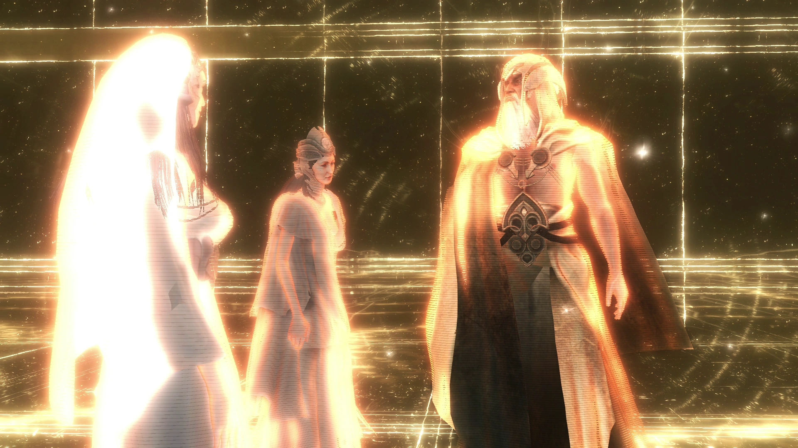

OS MELHORES JOGOS DE TODOS! By MultiPlataforma
Desenvolvido para fins educativos todos os materiais apresentados neste site foram tirados da internet
- Xbox
- Playstation
- Nintendo
- Página inicial
Por console
MultiPlataforma
Essa é a melhor categoria de jogos, sabe o motivo? Todos podem jogar independente da plataforma, e falar a verdade, isso devia ser o padrão, poder se divertir independente de qualquer coisa. Dito isso veremos aqui minhas franquias e jogos preferidos kkk
SAGA ASSASSIN'S CREED

Eu simplesmnete amo essa saga e ela é muito extensa para falar sobre cada jogo aqui, então vou falar sobre a saga no geral.
Assassin's Creed é uma série de jogos eletrônicos desenvolvida pela empresa Ubisoft. A premissa central da história envolve-se a partir da rivalidade entre duas sociedades secretas ancestrais: os Assassinos, que desejam a paz através do livre-arbítrio, e os Templários, que têm o objetivo de dominar o mundo e impor a ordem na humanidade. Ambos tiveram uma relação indireta com uma espécie que viveu antes dos humanos, cuja sociedade foi destruída por uma gigantesca tempestade solar. Misturando personagens e ficção histórica com eventos e figuras reais, a ordem cronológica dos jogos começa em 2012, e fala de Desmond Miles, um jovem que com a ajuda do Animus (uma máquina que permite ver as suas "memórias ancestrais"), explora as memórias de alguns dos mais proeminentes Assassinos da história.
Retirando inspiração a partir do romance "Alamut", do escritor esloveno Vladimir Bartol, Assassin's Creed começou como um spin-off da série Prince of Persia. O jogo original foi um esboço para Prince of Persia: The Two Thrones, antes da equipe decidir fazer uma nova propriedade intelectual, incluindo também um cenário no Médio Oriente, baseado no culto histórico de Assassinos Islâmicos ativos durante as Cruzadas.
A série começou em 2007 com o lançamento de Assassin's Creed e os jogos já foram lançados para várias plataformas incluindo PlayStation 3, PlayStation 4, Xbox 360, Xbox One, Microsoft Windows, Mac OS X, Nintendo DS, PlayStation Portable, PlayStation Vita, iOS, HP webOS, Android, Nokia, Symbian, Windows Phone, Wii U, Google Stadia, Nintendo Switch, PlayStation 5 e Xbox Series X. Os jogos principais foram na sua maior parte produzidos pelo estúdio Ubisoft Montreal com a colaboração do Ubisoft Annecy para o multijogador. Os portáteis foram produzidos pela Gameloft e Gryptonite Studios com trabalho adicional da Ubisoft Montreal.
Para além dos jogos, a série foi adaptada para os mais variados tipos de mídias, tais como livros, banda desenhada, roupas, brinquedos e um filme.
JOGABILIDADE
A maior parte dos jogos se passa dentro do Animus, onde a interface do dispositivo exibe a saúde, progresso, momento na história de seu ancestral, equipamentos e objetivos do jogador. Durante o uso do Animus, o jogador deve manter o nível de sincronização com seu ancestral, evitando fazer uso de ações que diminuem esse nível, como levar dano, matar pessoas inocentes e acessar áreas não disponíveis no momento. Os objetivos do jogo geralmente consistem em assassinar algum alvo, infiltrar-se em locais proibidos ou resgatar algum artefato perdido.
O jogador conta com vários recursos para realizar os assassinatos, como uma grande habilidade de parkour, podendo escalar quase qualquer construção e um vasto arsenal, sendo a principal arma a lâmina oculta, um dispositivo escondido no braço que saca uma lâmina e sutilmente assassina o inimigo. Mas o jogo conta também com outras armas brancas e de fogo, além das habilidades de arremessar facas e fazer uso de bombas. Mesmo com várias armas à disposição do jogador, o jogo encoraja o uso dos modos mais sutis possíveis para assassinar os alvos, para que não chame muita atenção e evite que os guardas da cidade comecem a caçá-lo. Para isso o jogo usa o conceito de movimentos passivos, que são sutis e discretos, e movimentos ativos como correr pelas ruas, escalar construções e correr pelos telhados das casas, que permitem velocidade, mas chamam muita atenção.
Duas habilidades-chave à disposição do jogador são o Salto de Fé, pelo qual o personagem pula (praticamente se jogando) de lugares muito altos para se descer normalmente, caindo em lugares que amortecem a queda, tais como carroças de feno, montes de folhas e na água; a Visão Aquilina, que permite ao jogador distinguir aliados dos inimigos e alvos por meio do uso de cores, além de haver detalhes que só podem ser vistos por meio desta habilidade. Ao longo do jogo, o personagem também conta com a ajuda de várias facções, como outros assassinos, além de cortesãs, ladrões, mercenários e ciganas. Por fim, o jogador deve libertar as cidades da influência dos templários, queimando estruturas que representam a dominação dos templários na região e reconstruindo a parte dominada, restaurando construções como ferrarias, alfaiatarias e pontos turísticos. No sexto jogo principal da série, Edward pode fazer uma exploração submarina.
ENREDO
Os jogos da série passam-se inicialmente em 2012, época em que Desmond Miles, um barman e descendente de uma linhagem da Ordem dos Assassinos, é sequestrado por membros das Indústrias Abstergo — uma fachada para os cavaleiros templários atuais — para descobrir a localização dos Pedaços de Éden, artefatos antigos de grande poder criados por Aqueles Que Nos Precederam. Para isso, Warren Vidic, um empregado da Abstergo, e Lucy Stillman, uma assassina infiltrada, forçam Desmond a usar o Animus, um dispositivo capaz, dentre outras coisas, de criar projeções em três dimensões a partir de memórias de ancestrais contidas no DNA, chamadas na série de memórias genéticas. A partir de tais lembranças, o dispositivo permitia ao paciente revivê-las, conferindo inclusive um controlo parcial sobre as cenas, como se estivessem sendo revividas.
No primeiro jogo da série, Desmond vive a vida do sírio Altair, membro de uma Ordem de Assassinos denominada Hashshashin da época da Terceira Cruzada da Terra Santa; e o seu principal objetivo é eliminar os membros da Ordem dos Templários, responsáveis pela Terceira Cruzada. Para eliminar certas vítimas, a personagem cruza as cidades de Damasco, Jerusalém e Acre, cumprindo o seu dever no meio de uma guerra secreta.
É possível misturar-se no meio das pessoas comuns das cidades para se camuflar e, assim, passar despercebido por guardas e outros inimigos — um elemento inédito e que caracterizou a jogabilidade da franquia em títulos futuros.
Ao conseguirem a informação desejada pela Abstergo, a morte de Desmond é ordenada, mas ele é salvo por um pequeno grupo de assassinos compostos por Lucy Stillman, Shaun Hastings e Rebecca Crane. Com isso, Desmond ajuda os Assassinos na corrida pelos Pedaços do Éden usando novas versões do Animus para fazer uso das memórias do nobre italiano Ezio Auditore da Firenze, e do guerreiro indígena norte-americano Ratonhnhaké: ton/Connor Kenway, assassinos do Renascimento e da Revolução Americana, respectivamente, para poder descobrir a localização dos outros artefatos.
Ao explorar as memórias dos três assassinos, Desmond busca a localização das Maçãs do Éden, orbes douradas capazes de corromper seu usuário e de controlar a mente de outros seres humanos, tornando-os meros servos leais e cegos ao portador da orbe. O artefacto recebeu este nome pois o vilão templário Al Mualim, um árabe muçulmano medieval, acreditava que este objeto era o fruto proibido que levou Adão e Eva a serem expulsos do paraíso por Deus (informação esta que mais tarde se revelou estar de certa forma correta dentro da trama da série, mas não da forma como Al Mualim acreditava). Uma Maçã do Éden acabou parando nas mãos de Altair, que nunca chegou a se corromper pelo objeto e que adquiriu conhecimentos muito além dos estudiosos medievais de sua época, porém os guardou para si em um Códice que escreveu.
A partir das memórias de Ezio Auditore Desmond também passa a procurar a localização de templos construídos por Aqueles Que Nos Precederam (também chamados de Isu). Ezio, um nobre italiano da era renascentista, havia encontrado e completado o Códice de Altair, que se revelou ser um mapa-múndi completo e muito mais avançado do que qualquer outro que existia em sua época. Através deste mapa ele encontra a localização de um templo dos Isu no subterrâneo de Roma. Ezio impede que o corrupto e controverso Rodrigo Borgia (retratado como um vilão templário no jogo) tivesse acesso ao templo. Os templários na época acreditavam que iriam encontrar o Deus cristão no Templo, porém no lugar do Deus cristão Ezio encontra a "deusa" venerada por seus antepassados romanos, Minerva. Em outras aventuras na Itália e também na Turquia, Ezio encontra outros dois templos e a deusa romana Juno e o deus romano Júpiter. Sendo um italiano renascentista e amigo próximo de Leonardo Da Vinci, Ezio se recusa a acreditar que encontrou deuses romanos e chega a conclusão que encontrou mensagens pré-gravadas por uma tecnologia muito mais avançada da que a de sua época.
O último templo somente foi encontrado na América do Norte, durante a vida de Ratonhnhaké:ton (também conhecido como Connor Kenway). Em algum momento durante ou antes do século XVIII, os habitantes da aldeia iroquesa de Kanatahséton, encontraram um dos artefatos da Primeira Civilização conhecidos como Bola de Cristal. A Mãe do Clã o usava para se comunicar com os "espíritos" dos membros da Primeira Civilização. Quando a Mãe do Clã permitiu que Ratonhnhaké:ton se comunicasse com os espíritos, na tentativa de dissuadi-lo de deixar o solo sagrado da tribo, ele se encontrou com Juno. Juno deu a ele acesso ao Nexus e o convenceu a se juntar aos Assassinos na tentativa de recuperar o amuleto roubado por seu pai Haytham Kenway e impedir que os Templários tivessem acesso ao Grande Templo. Depois que Ratonhnhaké:ton derrotou os Templários (incluindo seu arqui-inimigo Charles Lee) e recuperar o amuleto, ela o fez escondê-lo onde, supostamente, ninguém poderia encontrá-lo.
Desmond acorda em 21 de dezembro de 2012 e, com seus aliados, encontra o amuleto enterrado por Connor; a chave da porta interna do templo. Atrás dela, há uma esfera de controle capaz de interromper uma erupção solar. Juno aparece e incentiva Desmond a tocá-lo, mas Minerva aparece e o avisa para não fazê-lo, pois liberaria Juno como uma entidade que protegeria contra a explosão solar, mas também se tornaria uma ameaça para o futuro da humanidade. Desmond opta por lançar Juno, acreditando que a humanidade terá uma chance melhor de lutar contra ela. A energia da esfera de controle protege a Terra das explosões solares, mas mata Desmond. A consciência de Juno escapa do templo e a partir daí, ela se espalha pela web para habitar uma ampla variedade de sistemas em rede (Juno planejou escapar do templo num momento em que a tecnologia humana estivesse avançada o suficiente para sua consciência se espalhar pelo planeta).

Após o final de Assassin's 3, a série toma um novo rumo contando a trajetória do galês Edward James Kenway, pirata e corsário que viveu na Época Dourada da Pirataria, pai de Haytham Kenway e avô de Ratonhnhakéton (Connor Kenway). Edward era um corsário da Marinha Real e uma vez aceito, se viu estacionado nas Índias Ocidentais. No entanto, um fim abrupto da Guerra da Sucessão Espanhola e a promessa de ouro, glória e fama acabaram por seduzi-lo a uma vida de pirataria. Foi durante essa época que Edward encontrou as ordens dos Assassinos e dos Templários e se envolveu em sua luta. Kenway buscou desvendar uma conspiração entre Templários de alto escalão para manipular os Impérios Britânico, Espanhol e Francês para localizar o Sábio — mais tarde identificado como Bartholomew Roberts — o único homem que poderia levá-los ao Observatório. Construído para permitir a visualização remota da visão de qualquer indivíduo através do uso de uma Caveira de Cristal, era essencialmente um centro de vigilância usado pelos Isu para rastrear certos indivíduos. Os Templários queriam ter acesso ao Observatório pois queriam espionar na época líderes mundiais como reis, rainhas, imperadores, etc. Vendo o perigo que este local representava ele foi completamente destruído pelos Assassinos. (Nesta época tanto os Assassinos e Templários já chamavam os Isu de "Aqueles Que Nos Precederam").
Logo após a história de Edward, a franquia nos mostra a história do assassino que se tornou templário Shay Patrick Cormac, que nasceu na América Britânica, filho de imigrantes irlandeses, e acompanhou a Guerra dos Sete Anos e se tornou um amigo e aliado de Haytham. Shay decide trair os Assassinos após uma experiência traumática após o roubo de um Pedaço do Éden ter ocasionado no Terremoto de Lisboa de 1755. Com o objetivo de impedir que os Assassinos causem outros desastres naturais na América do Norte, Shay decide caçar todos os seus ex-companheiros assassinos e se juntar aos Templários.
 Um pouco depois conhecemos a história do nobre francês Arno Victor Dorian, que viveu na França durante a Revolução Francesa. Em sua história Arno busca encontrar a Espada do Éden. Esta pode conceder aos seus portadores um grande poder e liderança, e foi usada por influentes seres humanos em guerras e conquistas; vários famosos conquistadores e heróis tinham estado em posse desta Espada. A espada também é capaz de projetar raios em inimigos. A espada, que havia sido de Jacques de Molay, foi adquirida pelo vilão François-Thomas Germain, o grão-mestre da facção extremista da Ordem dos Templários. Germain usou a espada durante sua luta contra Arno Dorian e a amada deste Élise de la Serre. A espada foi danificada no confronto, quebrando e emitindo uma onda de choque que matou Élise e mortalmente feriu o próprio Germain. Após o evento, a Espada acabou em poder de Arno, embora enquanto não possuísse seus poderes anteriores por conta dos danos causados na luta final, permaneceu como uma das armas mais poderosas do arsenal de Arno.
Um pouco depois conhecemos a história do nobre francês Arno Victor Dorian, que viveu na França durante a Revolução Francesa. Em sua história Arno busca encontrar a Espada do Éden. Esta pode conceder aos seus portadores um grande poder e liderança, e foi usada por influentes seres humanos em guerras e conquistas; vários famosos conquistadores e heróis tinham estado em posse desta Espada. A espada também é capaz de projetar raios em inimigos. A espada, que havia sido de Jacques de Molay, foi adquirida pelo vilão François-Thomas Germain, o grão-mestre da facção extremista da Ordem dos Templários. Germain usou a espada durante sua luta contra Arno Dorian e a amada deste Élise de la Serre. A espada foi danificada no confronto, quebrando e emitindo uma onda de choque que matou Élise e mortalmente feriu o próprio Germain. Após o evento, a Espada acabou em poder de Arno, embora enquanto não possuísse seus poderes anteriores por conta dos danos causados na luta final, permaneceu como uma das armas mais poderosas do arsenal de Arno.
Então temos história dos irmãos gêmeos Jacob e Evie Frye, ele sendo líder de uma gangue de rua e ela sendo uma pesquisadora de peças antigas, sendo que viveram na Inglaterra vitoriana. Os irmãos gêmeos buscavam encontrar o Sudário de Éden (também chamado de Velo de ouro), um artefacto capaz de curar doenças e regenerar ferimentos. O Sudário foi transferido para uma cripta construída sob o Palácio de Buckingham por Albert, príncipe consorte em 1847. Em 1868, durante a Revolução Industrial, tanto os Assassinos quanto os Templários procuravam o artefato. Por fim, foi encontrado e usado por Crawford Starrick durante um confronto com Evie Frye, Jacob Frye e Henry Green, embora os três tenham conseguido removê-lo de do vilão templário e posteriormente o mataram enquanto ele não estava mais com a posse do objeto, com Jacob retornando o Sudário para o seu lugar de descanso.
Em 2016, a série foi introduzida nos cinemas onde o enredo ocorre no século XV, durante a Inquisição Espanhola, o herói dessa vez é Aguilar de Nerha, um ancestral de Callum Lynch, um presidiário que irá passar por pena de morte, e esta nas mãos das Indústrias Abstergo, ele entra no Animus e investiga o passado do seu ancestral.
Em Assassin's Creed Origins conhecemos a história de Bayek, um guerreiro do Antigo Egito (durante a guerra civil do faraó Ptolomeu XIII contra a sua irmã Cleopatra) cuja luta para proteger o seu povo o levou a criar a Ordem dos Ocultos (precursores dos Assassinos), com o jogo explorando a origem de seu conflito com a Ordem dos Anciões (precursores dos Templários). Bayek também busca vingança pela morte de seu filho, caçando todos os membros da Ordem dos Anciões, chegando até o general romano Flavius Metellus. Na DLC The Curse of the Pharaohs, Bayek chegou a viajar para o Vale dos Reis, onde teve de enfrentar os faraós revividos Aquenáton, Nefertiti, Ramssés II e Tutancâmon. No século XXI sabe-se que os faraós usaram a tecnologia d'Aqueles Que Nos Precederam (acreditado por eles serem artefactos mágicos) a fim de tentarem atingirem a vida eterna, porém na época Bayek acreditava que era uma "maldição" por ter invadido o túmulo dos faraós. Porém depois ele descobre que a maldição foi resultado das manipulações de uma antiga relíquia aos cuidados da sacerdotisa Isidora, que a usou para conjurar os espíritos desencarnados de vários faraós do passado, aparentemente retornando ao mundo dos vivos para vingar-se dos ladrões de túmulos e profanadores que atormentavam a região por gerações. Bayek, depois de investigar sua origem, recuperou a relíquia e assassinou Isidora. A própria relíquia foi então escondida.
Em Assassin's Creed Odyssey exploramos as memórias de Kassandra, amazona espartana da Grécia Antiga que lutou na Guerra do Peloponeso. Kassandra descobre que é uma descendente direta dos "deuses do Olimpo" (no século XXI considerados apenas como membros d'Aqueles Que Nos Precederam… não como divindades de fato) enquanto tenta impedir que o recém formado Culto do Kosmos (predecessores dos Templários e liderados por Alexios… irmão de Kassandra) encontre a mitológica Atlântida, uma vasta biblioteca de conhecimento do que os antigos gregos acreditavam ser dos "Deuses do Olimpo". Kassandra destrói o Culto e sela Atlântida. Em sua jornada Kassandra também encontrou monstros mitológicos da Grécia Antiga como cíclopes, o minotauro e medusa… porém é revelado no século XXI que esses monstros foram frutos de bizarras experiências biológicas realizadas pelos Isu, usando humanos sequestrados como cobaias e relíquias precursoras criadas especificamente para os transformar em monstros: os artefatos de Atlantida. Em sua história também é revelada as origens dos Templários e da Lâmina Oculta.
 No século XXI, Layla Hassan localiza o Cajado de Hermes, outro Pedaço do Éden. Layla fica surpresa ao descobrir que Kassandra ainda está viva, sustentada pelo Cajado. Kassandra informa Layla que sempre deve haver um equilíbrio entre os Assassinos e os Templários, para que a vitória de um lado não leve à destruição do mundo, e que é profetizado que ela manterá esse equilíbrio. Layla prova ser digna de levar o cajado, e afasta as forças da Abstergo que vieram para tomar o cajado para si.
No século XXI, Layla Hassan localiza o Cajado de Hermes, outro Pedaço do Éden. Layla fica surpresa ao descobrir que Kassandra ainda está viva, sustentada pelo Cajado. Kassandra informa Layla que sempre deve haver um equilíbrio entre os Assassinos e os Templários, para que a vitória de um lado não leve à destruição do mundo, e que é profetizado que ela manterá esse equilíbrio. Layla prova ser digna de levar o cajado, e afasta as forças da Abstergo que vieram para tomar o cajado para si.
Em Assassin's Creed Valhalla, a protagonista é a Skjaldmö (donzela escudeira) Eivor Varinsdóttir, que inicialmente busca vingança pela morte de seu pai, Varin, pelas mãos de Kjotve, um rei de um pequeno reino nordico. Após conhecer dois misteriosos estrangeiros, os árabes Basim e Hytham, Eivor ganha uma lâmina oculta destes e então pede ajuda ao rei Haroldo para derrotar e eliminar Kjotve em batalha. Porém após a morte de Kjotve Eivor decide partir em viagem em excursões na Inglaterra. Uma vez na Inglaterra Eivor busca se aliar aos chefes nordicos locais e passa a ter visões envolvendo Odin e Valhalla. Eventualmente Eivor descobre ser uma reencarnação de Odin.
Em 2020, o súbito fortalecimento do campo magnético da Terra afetam negativamente o planeta. Layla Hassan, Shaun Hastings e Rebecca Crane recebem as coordenadas dos restos mortais da viking Eivor Varinsdottir na Nova Inglaterra, após exuma-los, Layla coleta seu material genético e entra dentro do Animus para reviver suas memórias.
No ano de 855 DC, uma jovem Eivor (o jogador tem a opção de escolher se Eivor é homem ou mulher, porém, canonicamente Eivor é mulher) testemunha seu clã ser massacrado e seus pais serem mortos por Kjotve, o Cruel durante uma festa para celebrar a aliança entre o clã de Varin e o clã do Corvo. Eivor acaba caindo numa vala e é atacada por uma matilha de lobos, recebendo o apelido de Marca-de-lobo antes de ser salva por Sigurd, filho do Rei Styrbjorn do clã do Corvo. Dezessete anos depois, Eivor foi adotada pelo clã do Corvo e se tornou filha adotiva de Styrbjorn, e busca vingança contra Kjotve. Sua última tentativa foi fracassada e ela foi capturada pelo clã de Kjotve mas ela escapa e consegue recuperar o machado de seu pai. Ao tocá-lo, Eivor tem uma visão com Odin o que faz ela consultar a vidente Valka que talvez possa ajudá-la a decifrar as visões. Valka faz com que ela tenha outra visão dessa vez ela vê Sigurd perdendo um braço e um lobo gigante o devorando.
Após dois anos de viagem, Sigurd retorna para casa e traz consigo dois estrangeiros, Basim e Hytham, dois membros dos Ocultos que vieram para a Noruega para assassinar Kjotve pois o mesmo fazia parte da Ordem dos Anciões, Sigurd é fascinado pela sua doutrina e ideais e convence Basim a entregar uma lâmina oculta para Eivor apesar do mesmo não ser um Oculto, Eivor coloca sua lâmina em cima do antebraço ao invés de debaixo pois o mesmo não queria cometer o mesmo erro que Basim (decepar o dedo anelar). Contrariando ordens de Styrbjorn, Sigurd consegue a ajuda do Rei Harald para matar Kjotve, eles juntam um exército para invadir a vila de Kjotve onde o ataque é bem-sucedido e Eivor enfrenta Kjotve em combate onde Eivor sai vitoriosa.
Cansado de guerras e decepcionado com Sigurd e Eivor após o ataque, Styrbjorn entrega suas terras para o Rei Harald que planeja unificar a Noruega sob uma única coroa. Sigurd não aceita viver como um vassalo e decide partir com Eivor para a Inglaterra em busca de conquistarem terras e serem seus próprios senhores. Meses depois, Eivor e o clã do Corvo se estabelecem no assentamento de Ravensthorpe, e logo passam a forjar alianças com os vikings estabelecidos na Inglaterra. Com a ajuda de Randvi, esposa de Sigurd, Eivor ajuda a viking Souma a tomar Cambridge, mata o viking danês Rued e coroa Oswald como rei da Ânglia Oriental, conhece os vikings Ubba Ragnarsson e Ivar, o Desossado e os ajuda a coroar Ceolwulf como rei da Mércia. Enquanto ajuda Hytham a assassinar membros da Ordem dos Anciões com ajuda de dicas de um tal "Pobre Soldado de Cristo".
Eivor se encontra com Sigurd e Basim em Oxford onde Sigurd está em busca da Pedra-Saga, um artefato trazido por Ragnar Lodbrok para a Inglaterra do qual o mesmo acredita que pode revelar sua verdadeira origem já que Sigurd acredita ser descendente dos deuses. Com a ajuda da vidente Fulke, Sigurd acredita fortemente que o mesmo é um deus porém Eivor desconfia e se mostra relutante em aceitar as ordens de Sigurd porém o mesmo obedece por lealdade ao clã. Eventualmente, Fulke trai Eivor e se revela que serve ao Rei Alfred de Wessex e que faz parte da Ordem dos Anciões e Sigurd é sequestrado.
As visões de Eivor continuam onde a mesma revive as memórias de Odin em Asgard e Jotunheim. Durante as visões, os jotuns invadem Asgard após Loki deixar o portão da Bifrost aberto se aproveitando da ausência de Heimdall. Odin e Thor repelem a invasão e mais tarde o mesmo confronta Loki quanto a sua ausência na proteção da Bifrost. Odin encontra um lobo bebê e tenta matá-lo pois uma visão dizia que o mesmo seria morto por um lobo no Ragnarök porém é impedido por Týr. Tyr e Thor prendem o lobo numa jaula mas o mesmo cresce rapidamente e consegue escapar, Odin tenta matar o lobo porém é impedido por Loki que implora para que Odin não o mate revelando que o lobo era seu filho Fenrir. Odin poupa o lobo e depois viaja para Jotunheim em busca de uma substância chamada Hidromel para que o mesmo e outros deuses conseguissem sobreviver ao Ragnarok que estava iminente. Antes de pegar o Hidromel, Odin é confrontado por Loki que estava irado por ele ter quebrado sua promessa de que não iria derramar sangue de sua estirpe e que o mesmo teria sua vingança, eles se enfrentam e Odin sai vitorioso. Odin pega o Hidromel mas o mesmo é forçado a arrancar seu olho esquerdo como um sacrifício voluntário. Voltando para Asgard, Odin e Tyr decidem aprisionar Fenrir e fazer o mesmo perecer no Ragnarok com uma corda especial, como forma de distração, Tyr coloca seu braço direito na boca de Fenrir como forma de confiança antes de Odin o amarrar, Fenrir devora o braço de Tyr mas Odin não faz nada para impedir, apenas usando Tyr como uma mera distração. Na aurora do Ragnarok, Odin reune os deuses Thor, Tyr, Freia e Heimdall para consumir o hidromel na torre de Asgard onde os mesmos para reencarnar em corpos humanos após o Ragnarok. Loki se infiltra na torre, mata Heimdall e toma seu lugar, assim conseguindo reencarnar e orquestrar sua vingança contra Odin.
Layla não demora para descobrir que essas eram visões da Grande Catástrofe dos Isu porém Eivor as enxergava por um "filtro mitológico".
Eivor orquestra um ataque a Sussex reunindo todos seus aliados para resgatar Sigurd. O ataque é bem-sucedido, Eivor mata Fulke e encontra Sigurd que havia sido torturado por Fulke incessantemente e teve seu braço direito decepado. Sigurd aparenta estar distante e insano, o mesmo acredita ser a reencarnação do deus da guerra Tyr porém Eivor acredita que o mesmo está enlouquecido pela tortura.
Após ajudar Halfdan Ragnarsson, filho de Ragnar Lothbrok e rei da Nortúmbria a expulsar os pictos de Yorkshire e ajudar seu amigo de infância Vili a se tornar jarl de Nottinghamshire. Sigurd chama Eivor para voltar para a Noruega onde os mesmos sabiam da localização de um templo que Sigurd viu em suas visões que poderiam revelar suas origens. Chegando no templo, ambos se deparam com um megacomputador chamado Yggdrasil, eles acabam presos dentro de uma simulação de Valhalla onde ela e seu irmão viviam em um combate eterno onde todos morriam e ressucitavam constantemente. Eivor não demora para descobrir que aquela não era Valhalla de verdade e tenta tirar Sigurd, ela se depara novamente com Odin e logo descobre que ela é a reencarnação de Odin e que suas visões com Asgard e o Ragnarok eram apenas as memórias de Odin lentamente retornando e que esse tempo todo Odin estava influenciando as decisões de Eivor para que o mesmo pudesse retomar seu corpo. Eivor e Odin se enfrentam numa batalha mental onde Odin almejava derrotar Eivor, porém a mesma consegue expurgar a memórias dele de sua mente e voltar a si.
Eivor escapa da simulação apenas para se deparar com Basim fazendo Sigurd de refém, ele revela que é a reencarnação de Loki e estava seguindo ambos esse tempo inteiro, pois acreditava que Sigurd era a reencarnação de Odin porém ele descobre que na verdade era Eivor. Querendo vingança pela morte de seu filho, Basim enfrenta Eivor em combate porém Eivor o derrota e com a ajuda de Sigurd o prendem na Yggdrasil.
Eles retornam para a Inglaterra, Sigurd entrega o cargo de jarl do clã do Corvo para Eivor por acreditar que o mesmo era um líder melhor que ele e também encerra seu casamento com Randvi pois o mesmo não foi fundado em amor.
Nos tempos modernos, Layla consegue a localização do templo e viaja para a Noruega, ela encontra Basim ainda vivo preso na Yggdrasil antes da mesma entrar na Yggdrasil e acidentalmente deixar o cajado de Hermes cair. Dentro da simulação, Layla e Basim se encontram e ele a convence a liberá-lo, ele revela que foi ele que enviou a localização dos restos mortais de Eivor para Layla por meio da Internet. Layla se encontra com O Leitor, que é a consciência de Desmond Miles que continua vivo dentro do Cinza, ele e Layla começam a ler as várias linhas do tempo e tentar achar uma onde a A Grande Catástrofe em 2012 foi evitada. Basim deixa simulação e encosta no bastão de Hermes que consegue o ressucitar. Basim encontra Shaun e Rebecca em sua base nos Estados Unidos e pede pra encontrar William Miles, o grão-mestre dos Assassinos nos Estados Unidos, antes de entrar dentro do Animus para continuar revivendo as memórias de Eivor.
De volta a Inglaterra, Eivor planeja um ataque a Hampshire para encontrar e matar o Rei Alfred. Ela convoca todos os seus aliados e o ataque é um desastre, vários aliados morrem e o Rei Alfred havia desaparecido. Logo após matar todos os membros da Ordem dos Anciões, Eivor recebe uma carta do "Pobre Soldado de Cristo" que revela ser o Rei Alfred que na verdade era o Grande Magíster da Ordem dos Anciões e ele usou Eivor para destruir a ordem por dentro para que o mesmo pudesse reformar a seu bel prazer, criando assim a Ordem dos Templários.

GTA V
Grand Theft Auto V é um jogo eletrônico de ação-aventura desenvolvido pela Rockstar North e publicado pela Rockstar Games. É o sétimo título principal da série Grand Theft Auto e foi lançado originalmente em 17 de setembro de 2013 para PlayStation 3 e Xbox 360, com remasterizações lançadas em 2014 para PlayStation 4 e Xbox One, em 2015 para Microsoft Windows e em 2022 para PlayStation 5 e Xbox Series X/S. O jogo se passa no estado ficcional de San Andreas, com a história da campanha um jogador seguindo três criminosos e seus esforços para realizarem assaltos sob a pressão de uma agência governamental. O mundo aberto permite que os jogadores naveguem livremente pelas áreas rurais e urbanas de San Andreas.
A jogabilidade é mostrada em uma perspectiva de primeira ou terceira pessoa e o mundo pode ser atravessado a pé ou com veículos. Os jogadores controlam três protagonistas e podem alternar entre eles durante e fora das missões. A história é centrada em sequências de assaltos, com muitas missões envolvendo a jogabilidade de tiro e direção. Um sistema de "procurado" define a resposta e agressividade das forças da lei contra os crimes cometidos pelo jogador. O modo multijogador, Grand Theft Auto Online, permite que até trinta jogadores explorem o mundo e entrem em partidas competitivas ou cooperativas.
O desenvolvimento do jogo começou pouco depois do lançamento de Grand Theft Auto IV em 2008 e foi compartilhado por várias das subsidiárias da Rockstar ao redor do mundo. A equipe se influenciou por muitos de seus projetos anteriores como Red Dead Redemption e Max Payne 3, com o jogo tendo sido projetado ao redor de três protagonistas a fim de inovar a estrutura principal da série e impedir que ela estagnasse. Boa parte dos trabalhos de desenvolvimento centraram-se na criação do mundo aberto, com vários membros da equipe realizando pesquisas de campo pelo Sul da Califórnia. A trilha sonora contém músicas licenciadas e músicas originais compostas por um grupo de produtores que colaboraram no decorrer de vários anos.
Grand Theft Auto V recebeu uma enorme campanha de divulgação. Tornou-se o produto de entretenimento mais rapidamente vendido da história, arrecadando oitocentos milhões de dólares na estreia e alcançado um bilhão em apenas três dias. Foi aclamado pela crítica, que elogiou os múltiplos protagonistas, o mundo aberto, apresentação e jogabilidade. O jogo rendeu controvérsias devido sua representação das mulheres e uma missão contendo tortura para extração de informações. Considerado por muitos críticos e jogadores como um dos títulos mais importantes da sétima geração de consoles e como um dos melhores jogos eletrônicos já criados, Grand Theft Auto V também venceu vários prêmios, incluindo o de Jogo do Ano, de diversas publicações.
JOGABILIDADE
Grand Theft Auto V é um jogo eletrônico de ação-aventura que pode ser jogado a partir de uma perspectiva em terceira pessoa ou primeira pessoa, porém esta última é disponível apenas nas plataformas PlayStation 4, Xbox One e Microsoft Windows. Os jogadores completam missões, que são cenários lineares com objetivos definidos, a fim de progredirem pela história principal. Os jogadores podem vagar livremente pelo mundo de jogo quando não estão dentro de missões. O mundo é composto pela área rural do estado de San Andreas e pela cidade ficcional de Los Santos, com sua área total sendo bem maior do que em títulos anteriores da série. O mapa pode ser explorado completamente assim que o prólogo é completado, porém a progressão na história libera mais conteúdos de jogabilidade.
Os jogadores podem usar ataques corpo-a-corpo, armas de fogo e explosivos acessados através de uma roda de armamentos a fim de combaterem inimigos, tendo a capacidade de navegar pelo mundo por meio de automóveis, aeronaves, barcos e a pé. O jogo reintroduz tipos de veículos ausentes de Grand Theft Auto IV para poder acomodar o tamanho de seu mapa, como por exemplo aviões. Sistemas de mira automática e cobertura podem ser usados a fim de ajudarem no combate contra oponentes. O medidor de saúde irá se regenerar até a metade caso os jogadores sofram dano, com a vitalidade podendo ser restaurada completamente por meio de caixas de primeiros socorros ou pela ingestão de comida ou bebida. Os jogadores renascem em hospitais quando sua saúde é completamente drenada. Agências de combate ao crime podem responder à infrações cometidas pelo jogador através de um medidor de "procurado". Estrelas mostradas no medidor indicam o nível de procurado (por exemplo, helicópteros policiais e equipes da SWAT são enviadas contra os jogadores no nível máximo de cinco estrelas). Jogadores que forem presos ou mortos durante missões podem recomeçar a partir do último ponto de salvamento. Oficiais da lei irão procurar pelos jogadores caso estes deixem a área de patrulhamento. O medidor entra em esfriamento e eventualmente regride ao zero quando os jogadores se escondem do campo de visão dos policiais. Existem outros meios de escapar do nível de procurado, como por exemplo alterar a cor de um veículo dentro de alguma oficina.
O modo um jogador permite o controle de três personagens: Michael De Santa, Trevor Philips e Franklin Clinton – criminosos cujas histórias se interconectam à medida que as missões são completadas. Algumas missões são completadas apenas com um dos personagens, enquanto outras com dois ou com os três. Os jogadores podem trocar entre os protagonistas por meio de uma bússola direcional. O jogo automaticamente alterna de personagem durante missões a fim de completar certos objetivos. O avatar de um dos personagens irá piscar em vermelho na bússola se ele estiver em perigo ou necessitando de ajuda, ou em branco caso ele possuir uma vantagem estratégica.Apesar dos jogadores completarem missões com qualquer um dos três protagonistas, as mais difíceis missões de assalto necessitam de cúmplices controlados pela inteligência artificial que possuem habilidades únicas, como por exemplo direção ou hacking. Os cúmplices ficam com uma parcela da recompensa em dinheiro caso sobrevivam ao assalto e podem ficar disponíveis para missões futuras com melhoramentos em suas habilidades.São encorajadas diferenciações nas estratégias de assaltos; em uma missão de roubo, os jogadores podem subjugar civis com um agente incapacitador ou entrarem no local com armas na mão.
 Cada protagonista tem um conjunto de oito habilidades representadas por sua proeza em certas áreas como tiro ou direção. Cada personagem tem uma especialidade por padrão, apesar das habilidades melhorarem com o tempo de jogo. A oitava habilidade "especial" determina a efetividade ao realizar uma aptidão que é única para cada personagem. Michael entra em combate bullet-time, Franklin diminui a velocidade do tempo enquanto dirige e Trevor inflige duas vezes mais dano em inimigos ao mesmo tempo que sofre metade do dano em combates.Um medidor diminui enquanto a habilidade é usada e regenera-se quando os jogadores realizam ações hábeis (por exemplo, derrapar com carros enquanto Franklin ou atirar na cabeça de oponentes enquanto Michael). Os jogadores podem entrar em atividades específicas como mergulhos ou jogos de golfe enquanto vagam livremente pelo mundo. Cada personagem possui um celular para entrar em contato com amigos, iniciar atividades ou acessar a internet de dentro do jogo. A internet também permite que os jogadores comprem e vendam ações por meio de um mercado de ações. Os jogadores podem comprar propriedades de negócios, melhorar armas e veículos no arsenal de cada personagem e customizar suas aparências ao comprar roupas, cortes de cabelo, tatuagens e joias.
Cada protagonista tem um conjunto de oito habilidades representadas por sua proeza em certas áreas como tiro ou direção. Cada personagem tem uma especialidade por padrão, apesar das habilidades melhorarem com o tempo de jogo. A oitava habilidade "especial" determina a efetividade ao realizar uma aptidão que é única para cada personagem. Michael entra em combate bullet-time, Franklin diminui a velocidade do tempo enquanto dirige e Trevor inflige duas vezes mais dano em inimigos ao mesmo tempo que sofre metade do dano em combates.Um medidor diminui enquanto a habilidade é usada e regenera-se quando os jogadores realizam ações hábeis (por exemplo, derrapar com carros enquanto Franklin ou atirar na cabeça de oponentes enquanto Michael). Os jogadores podem entrar em atividades específicas como mergulhos ou jogos de golfe enquanto vagam livremente pelo mundo. Cada personagem possui um celular para entrar em contato com amigos, iniciar atividades ou acessar a internet de dentro do jogo. A internet também permite que os jogadores comprem e vendam ações por meio de um mercado de ações. Os jogadores podem comprar propriedades de negócios, melhorar armas e veículos no arsenal de cada personagem e customizar suas aparências ao comprar roupas, cortes de cabelo, tatuagens e joias.
ENREDO

O ex-assaltante de bancos Michael Townley vive em Los Santos, San Andreas, com o nome falso de Michael De Santa depois de fazer um acordo secreto com o agente Dave Norton do Federal Investigation Bureau (FIB) para permanecer escondido por causa de um roubo malsucedido em Ludendorff, North Yankton, nove anos antes. Ele conhece e fica amigo do criminoso Franklin Clinton quando este tenta retomar fraudulentamente o carro de seu filho Jimmy em nome de um vendedor armênio corrupto. Michael pouco depois descobre que sua esposa Amanda está dormindo com o técnico de tênis, perseguindo-o até uma mansão e destruindo-na em um ataque de raiva. A dona da mansão se revela ser a amante de um mexicano senhor do crime chamado Martin Madrazo, que exige compensação sob a ameaça de mais violência. Michael volta para sua vida de assaltante para obter dinheiro e convoca Franklin como cúmplice. Juntos eles realizam um assalto em uma joalheria para poderem pagar Madrazo. Trevor Philips, o único outro sobrevivente de Ludendorff, descobre sobre o assalto e percebe que foi o trabalho de Michael. Os dois se reencontram depois de Trevor caçar Michael até Los Santos.
O comportamento cada vez mais errático de Michael faz com que sua família lhe abandone, com suas tentativas de tornar-se alguém importante levando a um conflito contra Devin Wenston, um bilionário que desenvolve um ressentimento contra ele. Weston jura vingança depois de sua advogada morrer em um acidente pelo qual Michael recebe a culpa. Franklin resgata seu amigo Lamar Davis do gângster e ex-amigo Harold "Stretch" Joseph, que tenta matar Lamar repetidas vezes para provar-se diante de outros criminosos. Os esforços imprudentes de Trevor para consolidar seu controle sobre vários mercados negros lhe colocam em conflito contra a gangue de motoqueiros The Lost, várias gangues de rua latino-americanas, outros traficantes de metanfetamina, mercenários financiados pelo governo e a tríade.
Os agentes Dave Norton e Steve Haines do Federal Investigation Bureau (FIB) entram em contato com Michael e exigem que ele realize uma série de operações com Franklin e Trevor a fim de minar uma agência rival, a International Affairs Agency (IAA). Eles atacam um comboio armado carregando dinheiro para a IAA e assaltam um banco contendo os pagamentos de todos os policiais e funcionários públicos corruptos de Los Santos. Haines passa a sofrer um escrutínio por seus métodos, forçando Michael e Franklin a infiltrarem-se na sede do FIB para apagarem evidências sendo usadas contra ele. Michael aproveita a oportunidade para apagar o registro de suas próprias atividades, destruindo a alavancagem que Haines tinha sobre ele. O trio começa a planejar seu roubo mais audacioso: assaltar a reserva de ouro da Union Depository.
Michael faz as pazes com sua família e eles voltam a viver juntos em Los Santos. Enquanto isso, Trevor descobre que Brad Sneider, outro cúmplice de Ludendorff, não estava preso como fora levado a acreditar, mas que fora morto no assalto e enterrado em um túmulo com o nome de Michael. Os sentimentos de traição de Trevor causam fricção dentro do grupo e ameaçam minar os planos para a Union Depository. Michael e Norton são traídos por Haines e colocados em um impasse mexicano entre o FIB, IAA e a firma de segurança particular Merryweather, porém Trevor aparece para resgatá-los e afirma que apenas ele tem o direito de matar Michael. Os dois mantém a relação conturbada, mas concordam em realizar o assalto da Union Depository e se separarem depois.
O assalto da Union Depository é realizado com sucesso, porém Franklin é abordado por dois grupos que separadamente exigem que ele mate Michael ou Trevor. Haines e Norton defendem que Trevor é perigoso, enquanto Weston deseja vingança pela traição de Michael. Franklin fica com três opções: matar Michael, matar Trevor ou não matar nenhum dos dois e enfrentarem seus inimigos juntos.Caso mate um dos dois, ele quebra relações com o sobrevivente e volta para sua antiga vida. Caso escolha a terceira opção, os três enfrentam uma onda de ataque de forças do FIB e Merryweather, em seguida partindo para matar Haines, Stretch, Wei Cheng dos tríades e Weston. Michael e Trevor se reconciliam e os três param de trabalharem juntos mas continuam amigos.
LEGO STAR WARS: THE SKYWALKER SAGA
Lego Star Wars: The Skywalker Saga é um jogo eletrônico de ação-aventura, sendo o sexto título da série temática Lego Star Wars, e a sequência de The Force Awakens, de 2016, desenvolvido pela Traveller's Tales e publicado pela Warner Bros. Interactive Entertainment. Foi lançado em 5 de abril de 2022 para os consoles Nintendo Switch, PlayStation 4, PlayStation 5, Xbox One e Xbox Series X/S e o sistema Microsoft Windows.
O jogo adapta todos os nove títulos da série de filmes da Saga Skywalker, com personagens adicionais baseados em outros filmes e séries de televisão de Star Wars programados para serem lançados posteriormente como conteúdos adicionais para download (DLC). The Skywalker Saga recebeu avaliações positivas da crítica.
JOGABILIDADE

Ao contrário da maioria dos jogos com temáticas Lego em que os jogadores precisam avançar pela história em uma ordem linear, em Lego Star Wars: The Skywalker Saga os jogadores podem optar por iniciar o jogo a partir de qualquer uma das três trilogias da Saga Skywalker e completá-las na ordem que desejarem. Cada episódio possui cinco missões de história, perfazendo um total de 45 fases, contrastando com seis estágios por episódio dos jogos anteriores. O combate foi renovado em relação aos títulos anteriores, como os portadores de sabres de luz, que agora usam uma variedade de combinações com ataques leves, ataques pesados e movimentos da Força, e personagens com explosivos com uma câmera sobre o ombro. O jogo apresenta 300 personagens jogáveis.
Semelhante a seu antecessor, Lego Star Wars: The Force Awakens, o centro do jogo não é uma única área, como a Mos Eisley Cantina em Lego Star Wars: The Complete Saga, mas uma ampla gama de planetas totalmente exploráveis cheios de muitos marcos icônicos da franquia Star Wars. Entre os planetas e luas que podem ser explorados incluem: Naboo, Tatooine, Coruscant, Kamino, Geonosis, Kashyyyk, Utapau, Mustafar, Yavin 4, Hoth, Dagobah, Bespin, Endor, Jakku, Takodana, D'Qar, Starkiller Base, Ahch-To, Cantonica, Crait, Ajan Kloss, Pasaana, Kijimi, Kef Bir e Exegol. Muitas naves também possuem áreas livremente exploráveis, como a Star Destroyers e a Estrela da Morte. Encontros aleatórios também acontecem no centro do jogo. Por exemplo, uma Imperial Star Destroyer poderia saltar de repente do hiperespaço e enviar uma frota de TIE Fighters atrás do jogador. Os jogadores podem optar por se envolver em duelos com eles ou continuar avançando na história.

A TT Games confirmou que Lego Star Wars: The Skywalker Saga não inclui uma ferramenta de personalização de personagens, ao contrário de seu antecessor, Lego Star Wars: The Force Awakens. O jogo também inclui o Modo Mumble, um recurso extra que permite que os jogadores alternem entre a dublagem original do jogo e ter os personagens murmurando e grunhindo, semelhante ao estilo dos jogos Lego mais antigos.
THE WITCHER 3: WILD HUNT

The Witcher 3: Wild Hunt (em polonês: Wiedźmin 3: Dziki Gon) é um jogo eletrônico de RPG de ação em mundo aberto desenvolvido pela CD Projekt RED e lançado no dia 19 de maio de 2015 para as plataformas Microsoft Windows, PlayStation 4, Xbox One e em outubro de 2019 para o Nintendo Switch, sendo o terceiro título da série de jogos The Witcher. Ele sucede The Witcher (2007) e The Witcher 2: Assassins of Kings (2011), que foram baseados na série de livros de fantasia Wiedźmin, do escritor polonês Andrzej Sapkowski.
Ambientado em um gigantesco cenário medieval que dá liberdade total ao jogador, o game, que possui uma jogabilidade não linear e é jogado através de uma perspectiva em terceira pessoa, tem o lendário bruxo Geralt de Rívia como seu protagonista, o qual inicia uma longa jornada pelos Reinos do Norte. Enquanto a ordem planetária enfrenta uma grande mudança, com o misterioso e macabro exército de cavaleiros vermelhos conhecido como a "Caçada Selvagem" deixando somente sangue e ruína por onde passa, o jogador terá de enfrentar diversos perigos, usando espadas e magia num mundo em crise, à medida que interage com outros personagens e completa missões para o progresso da história, podendo viajar a pé, a barco, ou montado em Carpeado, o cavalo inseparável de Geralt.
The Witcher 3: Wild Hunt foi amplamente aclamado pela crítica, com alguns considerando-no como um dos melhores jogos de todos os tempos. Sua consagração veio na noite de 3 de dezembro de 2015, quando foi galardoado com o grande prêmio de Jogo do Ano na cerimônia de condecoração The Game Awards, considerada a mais importante e prestigiada do ramo dos videogames. The Witcher 3: Wild Hunt é um dos jogos mais premiados da história, com 257 prêmios de múltiplas publicações e eventos recebidos apenas na categoria de melhor jogo. Também foi um sucesso financeiro, tendo vendido cerca de 50 milhões de cópias ao redor do mundo, tornando-se um dos jogos mais vendidos de todos os tempos. Dois pacotes de expansão, intitulados Hearts of Stone e Blood and Wine, ainda foram lançados para o jogo, com ambos recebendo igualmente aclamação geral da crítica especializada.
JOGABILIDADE

Apesar de ser similar aos outros jogos da série The Witcher, Wild Hunt melhorou sua jogabilidade em diversos aspectos. O estilo de combate, que foi completamente renovado, decorre num sistema usual do gênero RPG de ação combinado com o uso de magias, e entre as novas mecânicas introduzidas no game, estão os "sentidos de bruxo", a técnica de combate a cavalo e em alto mar, a possibilidade de mergulhar, e a inclusão de uma besta como arma alternativa. Além disso, Geralt agora pode saltar, escalar e pular sobre objetos, algo que não era possível nos títulos antecessores. As mecânicas de escalada foram descritas por seus desenvolvedores como "não tão iguais" às de Assassin's Creed, mas mais "similar ao que temos em Uncharted".A criação de itens e poções permanece como nos jogos anteriores, apesar de com uma leve modificação em relação a The Witcher 2, e os cinco sinais de bruxo(igni,quen,yrden,axii,aard) retornam ligeiramente modificados, tendo cada um deles uma forma diferente de ser utilizada.
Cada escolha ou atitude que o jogador toma afeta o mundo do game; todas as missões possuem inúmeras opções para as completar, o que interfere muito no resultado de cada uma delas. A CD Projekt RED refere que são necessárias, no mínimo, 100 horas para terminar o jogo, sendo 50 horas com missões secundárias e a outra metade com a história principal, podendo chegar a mais de 200 horas se o jogador decidir "fazer tudo" no game.
 The Witcher 3: Wild Hunt tem um sistema de dia-e-noite dinâmico, inteligência artificial ultra-realista e uma atmosfera extremamente viva. O ciclo dia-e-noite influencia alguns monstros e os seus poderes, similar à forma como um lobisomem ganha os seus poderes apenas quando está numa noite de lua cheia. A barba do personagem Geralt também irá crescer à medida que ele viaja pelo mundo. De acordo com os desenvolvedores, a barba cresce em "estados diferentes", no entanto, esta característica só se tornará disponível depois que o jogador baixar o pacote adicional gratuito de nome "Beard and Hairstyle" (Barbas e cortes de cabelo). Uma outra grande novidade acrescentada no jogo é o minigame de cartas colecionáveis Gwent(jogo de cartas da serie the Witcher), que substitui os jogos dos dados dos dois títulos anteriores.
The Witcher 3: Wild Hunt tem um sistema de dia-e-noite dinâmico, inteligência artificial ultra-realista e uma atmosfera extremamente viva. O ciclo dia-e-noite influencia alguns monstros e os seus poderes, similar à forma como um lobisomem ganha os seus poderes apenas quando está numa noite de lua cheia. A barba do personagem Geralt também irá crescer à medida que ele viaja pelo mundo. De acordo com os desenvolvedores, a barba cresce em "estados diferentes", no entanto, esta característica só se tornará disponível depois que o jogador baixar o pacote adicional gratuito de nome "Beard and Hairstyle" (Barbas e cortes de cabelo). Uma outra grande novidade acrescentada no jogo é o minigame de cartas colecionáveis Gwent(jogo de cartas da serie the Witcher), que substitui os jogos dos dados dos dois títulos anteriores.
Por fim, ainda que seja uma continuação, a CD Projekt RED informou que não é necessário ter jogado os jogos antecedentes da série para apreciar ao máximo the Witcher Wild Hunt, que também tem como personagem jogável a bruxa de poderes míticos Ciri.
ENREDO

Premissa
The Witcher 3: Wild Hunt conclui a história do lendário bruxo Geralt de Rívia, o protagonista da série, que vem sendo contada nos jogos antecessores e nos livros da série cronologicamente anteriores a esses. Bruxos são humanos geneticamente modificados ensinados a lutar contra monstros desde jovens, possuindo diversas habilidades especiais, as quais divergem de bruxo para bruxo. Com grande conhecimento alquímico, estes caçadores de recompensas usam a magia em grande parte de seu cotidiano, sobrevivendo ao matar criaturas monstruosas e outras ameaças em troca de dinheiro. No entanto, apesar de serem cultos pela educação que receberam na juventude, sofrem grande preconceito da sociedade por submeterem-se a vários experimentos durante seu treinamento, sendo muitas vezes considerados como aberrações pelas pessoas.Partindo exatamente do final de The Witcher 2, com os outrora poderosos que procuravam usar-lhe já não existindo mais, Geralt, apelidado de "lobo branco" por seus olhos animalescos e cabelos brancos, que são efeitos colaterais dos experimentos pelos quais passou, dá seguimento a sua aventureira vida, embarcando numa importante missão pessoal enquanto a ordem mundial enfrenta mudança. A nova missão do caçador de monstros é dada em tempos sombrios nos quais um misterioso exército conhecido como a "Caçada Selvagem" invade os Reinos do Norte, deixando apenas sangue e ruína por onde passa; parece que Geralt é a chave para os parar.
Narrativa
A história do jogo é complexa e profunda, com as escolhas do jogador ramificando as aventuras em vários níveis, os quais incluem a trama principal, as inúmeras aventuras paralelas, que são liberadas a todo momento, e as questões cotidianas triviais. Salvar o filho do moleiro de um ataque de um Wyvern, por exemplo, pode afetar quem acabará por vestir uma coroa, enquanto frustrar uma conspiração para assassinar um senhor nobre pode significar a ruína de seus súditos oprimidos.As missões, que são todas apresentadas de forma cinematográfica, podem ser tomadas em qualquer ordem, seja completando uma de cada vez ou prosseguindo simultaneamente com as outras. Independentemente do método, as ações do jogador trarão muitas consequências, as quais podem mudar a história e afetar o mundo do jogo. Essas consequências culminam em três epílogos jogáveis completamente diferentes definidos em um dos doze estados possíveis do mundo. Definido pelo resultado de eventos climáticos e o destino dos principais personagens, esses estados fornecem um total de 36 finais diferentes.
Principal
Seguindo diretamente os eventos de The Witcher 2: Assassins of Kings, a narrativa central começa com um sonho de Geralt passado em Kaer Morhen, uma escola de bruxos agora destruída, onde Yennefer de Vengerberg, uma feiticeira de seu interesse amoroso, notifica-lhe de que Cirilla, sua jovem filha adotiva em formação para se tornar uma caçadora de monstros, estava treinando sem a sua permissão. Ainda no sonho, Geralt encontra Cirilla, apelidada de Ciri, e a traz de volta para Vesemir, seu mestre. No entanto, a Caçada Selvagem, um exército fantasma cuja mitologia representa o "começo do fim do mundo", aparece repentinamente e sequestra Ciri. Quando acorda, Geralt se dá conta de que ainda estava na sua longa busca por Yennefer com o seu mentor Vesemir.Enquanto tentando encontrar Yennefer na aldeia temeriana de Pomar Branco, Geralt entra em contato com um comandante Nilfgaardiano chamado Peter Saar Gwynleve, que lhe dá a tarefa de caçar um monstruoso Grifo em troca da localização de Yennefer. Subsequentemente, Yennefer encontra Geralt e Vesemir depois de um incidente numa taverna, dizendo ao bruxo que Emhyr var Emreis, o imperador de Nilfgaard, lhe convocou a Vizima, a capital de Teméria ocupada por Nilfgaard. Ao longo do caminho para Vizima, porém, Geralt e Yennefer são emboscados pela Caçada Selvagem, mas a feiticeira os teletransporta com sucesso para algum lugar distante dali. Já em Vizima, o imperador Emhyr dá a Geralt a missão de encontrar sua filha biológica, Ciri, que com a aparição da Caçada Selvagem, começou a gerar notícias de seu retorno. O grande objetivo do exército de cavaleiros vermelhos da Caçada Selvagem é então revelado: capturar Ciri e extrair seus grandiosos poderes de manipulação do espaço e do tempo, oriundos do sangue ancestral. Visando benefícios próprios, Geralt então aceita procurar pela filha de Emhyr, que revela o desejo de transformá-la na imperatriz de seu reinado.
Em Velen, Geralt encontra Hendrik, o espião Nilfgaardiano que ele deveria contatar, brutalmente torturado até a morte pela Caçada Selvagem. Anotações do espião levam Geralt a Philip Strenger, autoproclamado como o Barão Sanguinário e senhor do vilarejo de Poleiro do Corvo, o qual, por sua vez, dá ao bruxo a tarefa de encontrar sua esposa Anna e sua filha Tamara em troca de informações sobre Ciri. Depois de descobrir que o Barão havia espancado sua esposa, Geralt teve de lidar com a outra filha de Strenger, que tinha sido abortada pela mãe e tornado-se uma abominável criatura conhecida como "fetulho". Ao ser derrotada, o fetulho recebe o nome de Dea, guiando o bruxo à cabana de um pescador que viu a esposa do Barão ser sequestrada por um monstro e Tamara fugindo para a cidade de Oxenfurt. Logo depois, Geralt reencontra Keira Metz, uma velha conhecida feiticeira e ex-conselheira do antigo rei Foltest de Teméria, que havia supostamente sido referida por Hendrik em suas anotações. Assim, ela o leva para uma caverna de ruínas élficas com o intuito de encontrar pistas sobre Ciri, que, segundo Keira, estava sendo procurada por um misterioso mago mascarado. Após toparem com a Caçada Selvagem no local, ambos são obrigados a evacuar, e Keira aconselha Geralt a falar com as chamadas "Senhoras da Floresta", espíritos anciões que exercem domínio sobre a região. Subsequentemente, após esbarrar com a cuidadora dos órfãos do Pântano Retorcido, Geralt atende às Senhoras e conclui a tarefa de lidar com o espírito da "Colina Sussurrante" em troca do paradeiro de Ciri. Ele também descobre que a cuidadora dos órfãos é Anna, esposa do Barão, e que as Senhoras estão a mantendo como escrava. É possível ajudar o Barão a tentar libertar sua esposa das Senhoras, o que leva o caso a diferentes desfechos determinados pela forma de como Geralt lidou com o espírito da colina.
As informações obtidas por Geralt levam-no a Novigrad, capital do Reino da Redânia, onde descobre que a Igreja do Fogo Eterno, uma organização religiosa militante frequentada pelo rei Radovid, está realizando um massacre contra os magos da cidade. Assim, o bruxo se encontra com a feiticeira Triss Merigold, uma antiga amante sua que o instrui a visitar a oniromante Corinne Tilly, a qual pode encontrar rastros de Ciri com seus sonhos. Desta forma, Geralt conclui que encontrar Ciri depende da localização do bardo Dandelion, um velho amigo seu com quem Triss havia feito contato recentemente. Isto leva o bruxo a se infiltrar em uma complicada rede de alianças do submundo do crime de Novigrad, formada essencialmente por Sigismund Dijkstra, ex-chefe da rede de espionagem da Redânia, e Wily Cipriano, um sádico senhor do crime. Depois de uma complicada série de eventos, Geralt, com a ajuda de Zoltan Chivay, do dúplice Dudu e da trovadora Priscilla, finalmente encontra e resgata Dandelion, descobrindo que Ciri havia se teletransportado para o arquipélago de Skellige. Opcionalmente, em Novigrad, Geralt pode ajudar Triss com a fuga dos magos de Novigrad (levando a um romance com ela), ajudar Dandelion a abrir seu cabaré, lidar com um assassino em série que quase matou Priscilla, e ajudar a tramar o assassinato do rei Radovid com Dijkstra, Vernon Roche, Ves e Thaler.
A partir daí, ao descobrir o destino de Ciri em Novigrad, Geralt ruma às ilhas de Skellige, em que se reencontra com Yennefer no funeral do Rei Bran. No velório, Geralt e Yennefer roubam a máscara de Uroboros do druida Arminho, a usando na Floresta Dizimada para obter visões do passado, como quando Ciri havia chegado nas ilhas com um misterioso mago e, em seguida, fugido. Isto os leva ao vilarejo de Lofoten, onde Yennefer procura por Skjall, um homem da aldeia que ajudou Ciri a escapar da Caçada Selvagem. Eles então encontram o corpo de Skjall, que tinha sido expulso de Lofoten por sua covardia, no jardim de Freya, usando necromancia para obter informações do rapaz sobre Ciri. Opcionalmente, em Skellige, Geralt pode encontrar Hjalmar, filho de Crach an Craite, o qual havia ido matar um gigante de gelo em Undvik, e sua filha Cerys, que foi tentar acabar com a maldição sobre o burgomestre Udalryk em Spikeroog. Encontrar ambos leva a uma chacina ocorrida durante uma cerimônia para escolher o próximo rei, sendo que as ações de Geralt no massacre fazem Hjalmar ou Cerys tornarem-se regentes de Skellige (se a procura por eles não tiver sido feita, Svanrige, o filho do rei Bran, torna-se governante) e parte da conspiração que provocou a chacina é exposta. Geralt também pode ajudar Yennefer a desfazer seu desejo de um djinn (que baseia-se no conto homônimo do livro O Último Desejo), onde é possível escolher ficar com Yennefer ou não.
Desta forma, Geralt junta todas as pistas e sai em busca de Uma, uma pequena criatura deformada amaldiçoada que pode ser a chave para encontrar Ciri. Após pegá-lo do Barão Sanguinário (ou de seus homens), que ganhou a criatura de um comerciante de Skellige, Geralt o leva, logo depois de ver Emyhr em Vizima, para a fortaleza de Kaer Morhen. Lá, Yennefer e outros bruxos ajudam a tirar a maldição sobre Uma com o auxílio dos Elixires das Gramas, que transformam-no em Avallac'h, um elfo da raça Aen Elle (a mesma de Eredin, o rei da Caçada Selvagem, e de todos os outros cavaleiros vermelhos). Avallac'h revela que ele escondeu Ciri na Ilha da Neblina, nos confins de Skellige, e Geralt sugere que, após trazê-la para Kaer Morhen, todos juntem suas forças para uma grande futura batalha contra a Caçada Selvagem, obviamente vindo atrás dela. Depois de recrutar aliados para essa luta, Geralt então se dirige para a ilha, onde encontra Ciri, que estava sendo cuidada por alguns anões, em grave estado. Enquanto o bruxo lamentava sua "morte", o elfo guia de Ciri Avallac'h a desperta quando nos braços de Geralt, explicando-no que Eredin tem medo de seu mundo ceder para a Geada Branca, um dos presságios profetizados por Ithlinne onde mudanças climáticas levariam ao fim da civilização, e que ele deseja usar seus poderes do sangue ancestral para evacuar o seu povo e conquistar outros reinos. Então, ela teletransporta Geralt para Kaer Morhen enquanto a Caçada começa a os perseguir, chegando na grande fortaleza em seguida. Vesemir, na tentativa de proteger Ciri, é morto por Imlerith, um general da Caçada, e atormentada, ela libera incontrolavelmente todos os seus poderes, fazendo Eredin e seu exército recuarem, com Avallac'h lançando um feitiço para acalmá-la. Geralt, Yennefer, Triss, Ciri, e outros aliados, em seguida, realizam um funeral para Vesemir.
Fervendo por vingança, Ciri então pede que Geralt a acompanhe até a Montanha Careca para matar o assassino de Vesemir, Imlerith. Logo, enquanto Ciri enfrenta as Senhoras da Floresta, o bruxo desafia Imlerith, que é derrotado após um grande combate, mas uma das Senhoras escapa com o medalhão do lobo de Vesemir. Posteriormente, Geralt e Ciri voltam a Novigrad para ajudar Triss e Yennefer a restaurar a Estada das Feiticeiras, que os auxiliariam a combater a Caçada Selvagem. Desta forma, o bruxo resgata as feiticeiras Philippa Eilhart e Margarita de Dijkstra e da prisão de Oxenfurt, respectivamente.
Mais tarde, Geralt viaja entre mundos com Avallac'h para encontrar o elfo Ge'els, também do mundo dos Aen Elle e um dos tenentes dos cavaleiros da Caçada, fazendo-o se voltar contra Eredin. Eles também ficam sabendo de um artefato chamado Pedra Solar, localizado em Skellige, que pode atrair o líder dos cavaleiros vermelhos. Opcionalmente, Geralt pode seguir com o plano do assassinato do rei Radovid, com Philippa dando-lhe o golpe de sua morte; Depois disso, o bruxo pode escolher ficar do lado de Vernon Roche ou Dijkstra, o que resultará na morte de um dos dois. Subsequentemente, em Skellige, Geralt liberta a feiticeira Fringilla Vigo, e, juntamente de Philippa, encontra a Pedra Solar, indo, logo após, com Yennefer e Ciri ao laboratório de Avallac'h. Ali, revelações sobre o sangue ancestral que perturba Ciri vêm a tona, e, opcionalmente, Geralt pode ajudá-la a dar um enterro digno para Skjall, que, também opcionalmente, pode ter tido um relacionamento amoroso com Ciri.
 Em Undvik, Avallac'h consegue atrair a Caçada usando a Pedra Solar, fazendo Geralt e seus aliados, junto com o exército de Nilfgaard, combaterem-nos numa derradeira batalha. Em seguida, porém, os cavaleiros vermelhos lançam um feitiço que os congela, levando Ciri a tentar libertá-los ao atacar Caranthir, braço-direito de Eredin e antigo estudante de Avallac'h. Depois que a guerreira quebra o feitiço, ela é ferida e teletransportada para longe, sendo, no caminho para o navio almirante da Caçada, acolhida pela marinha de Crach an Craite. Enquanto Geralt acaba com Caranthir, Eredin, no entanto, consegue atacar a marinha e assassinar Crach, levando o bruxo a enfrentá-lo em uma grande e brutal batalha, da qual sai vitorioso. Em seu último suspiro, Eredin revela que Avallac'h tem Ciri em suas mãos e que ele mentiu para todos, terminando com Yennefer salvando o bruxo dos cães restantes da Caçada. Deste modo, eles então partem para encontrar Avallac'h numa grande torre situada nas proximidades, onde, através de um portal, o elfo inicia uma conjunção de dimensões que leva inúmeros seres e eventos climáticos a se dissiparem pela área. Já dentro da torre, Geralt confronta Avallac'h, mas o mesmo não aceita o combate e diz estar na verdade apenas ajudando Ciri. A guerreira então aparece e pede para Geralt acreditar no mago, dizendo que apenas seu sangue ancestral pode parar a mortífera Geada Branca antes que consuma todas as vidas de todos os mundos. Após uma discussão acalorada ou demonstração de apoio a Ciri, dependendo das escolhas do jogador, a guerreira atravessa o portal e enfrenta a Geada Branca, conseguindo terminar com a ameaça ao destruir sua fonte.
Em Undvik, Avallac'h consegue atrair a Caçada usando a Pedra Solar, fazendo Geralt e seus aliados, junto com o exército de Nilfgaard, combaterem-nos numa derradeira batalha. Em seguida, porém, os cavaleiros vermelhos lançam um feitiço que os congela, levando Ciri a tentar libertá-los ao atacar Caranthir, braço-direito de Eredin e antigo estudante de Avallac'h. Depois que a guerreira quebra o feitiço, ela é ferida e teletransportada para longe, sendo, no caminho para o navio almirante da Caçada, acolhida pela marinha de Crach an Craite. Enquanto Geralt acaba com Caranthir, Eredin, no entanto, consegue atacar a marinha e assassinar Crach, levando o bruxo a enfrentá-lo em uma grande e brutal batalha, da qual sai vitorioso. Em seu último suspiro, Eredin revela que Avallac'h tem Ciri em suas mãos e que ele mentiu para todos, terminando com Yennefer salvando o bruxo dos cães restantes da Caçada. Deste modo, eles então partem para encontrar Avallac'h numa grande torre situada nas proximidades, onde, através de um portal, o elfo inicia uma conjunção de dimensões que leva inúmeros seres e eventos climáticos a se dissiparem pela área. Já dentro da torre, Geralt confronta Avallac'h, mas o mesmo não aceita o combate e diz estar na verdade apenas ajudando Ciri. A guerreira então aparece e pede para Geralt acreditar no mago, dizendo que apenas seu sangue ancestral pode parar a mortífera Geada Branca antes que consuma todas as vidas de todos os mundos. Após uma discussão acalorada ou demonstração de apoio a Ciri, dependendo das escolhas do jogador, a guerreira atravessa o portal e enfrenta a Geada Branca, conseguindo terminar com a ameaça ao destruir sua fonte.O epílogo do jogo varia de acordo com as escolhas que o jogador fez durante a narrativa. No que diz respeito especificamente a Ciri, há três resultados possíveis: se Geralt apresentou-a ao imperador Emhyr, ajudou no assassinato do rei Radovid e, posteriormente, se manteve do lado de Roche, a guerreira ancestral aceitará o trono de imperatriz de Nilfgaard, justificando que poderia fazer mais bem para o mundo como uma soberana do que como uma simples caçadora de monstros; se não apresentá-la ao imperador, Geralt simula a morte de Ciri, a qual torna-se uma caçadora de monstros errante como o bruxo; se Ciri morreu para a Geada, Geralt em seguida persegue a última das Senhoras para recuperar o medalhão de Vesemir, sua única lembrança da guerreira. Esse final termina com uma horda de monstros infestando a casa na qual o bruxo encontrou o amuleto, o que indicou sua morte.